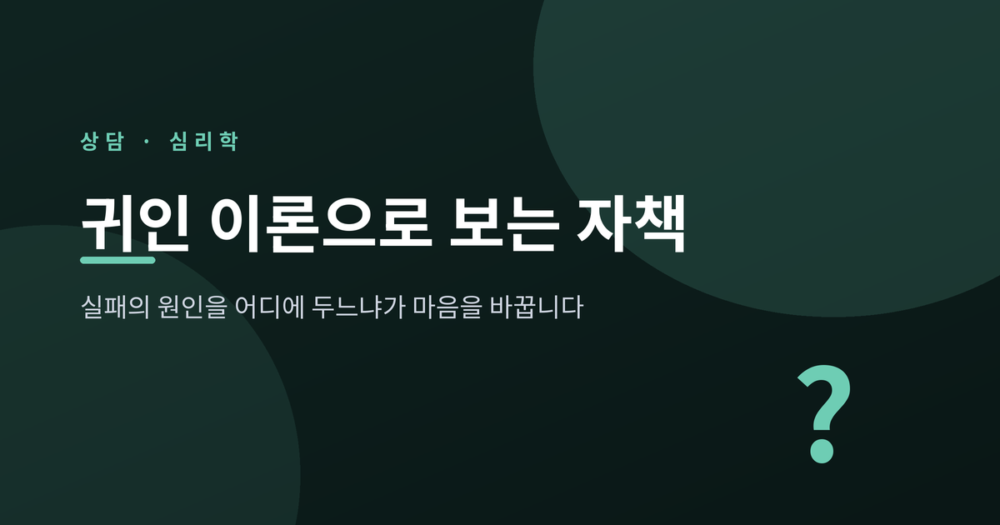
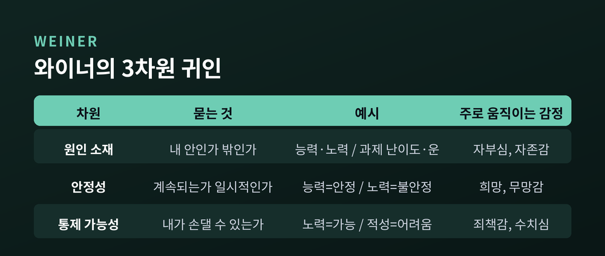
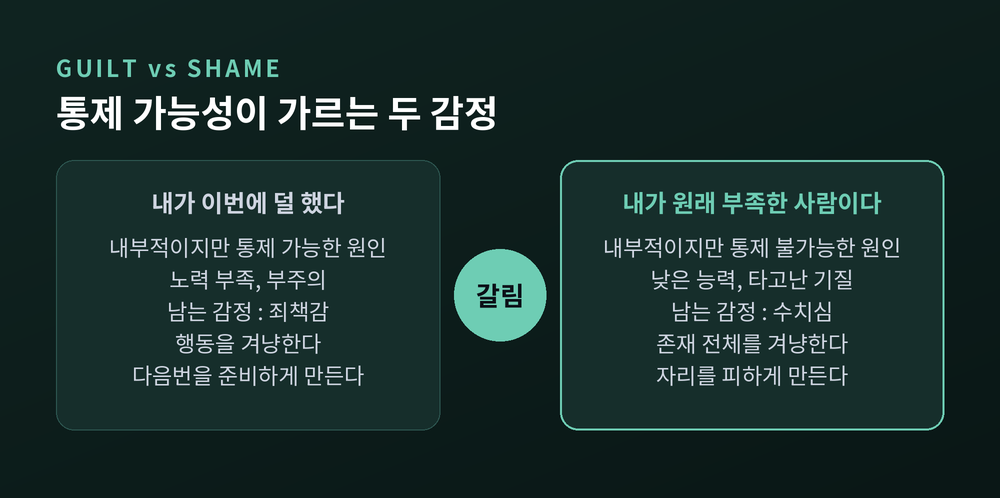
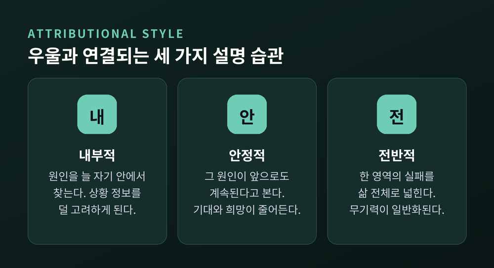
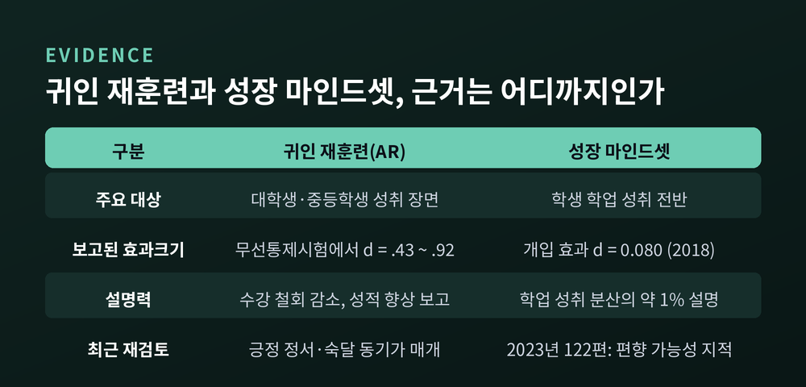
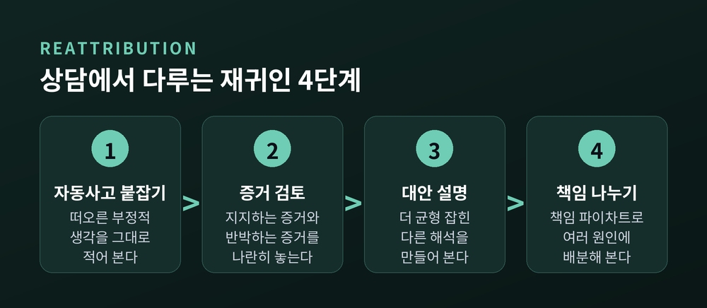

귀인 이론으로 보는 자책, 실패의 원인을 어디에 두느냐가 마음을 바꿉니다

일이 잘못됐을 때 우리는 반사적으로 원인을 찾습니다. 그 원인을 어디에 두느냐에 따라 이어지는 감정이 달라진다는 것이 심리학의 오랜 발견입니다. 이번 글에서는 귀인 이론이 자책을 어떻게 설명하는지, 그리고 연구들이 실제로 무엇을 밝혀냈는지 정리해 보겠습니다.
먼저 세 줄로 요약합니다.
- 같은 '내 탓'이라도 통제할 수 있는 원인으로 보면 죄책감이, 통제할 수 없는 원인으로 보면 수치심이 남습니다.
- 부정적인 일을 내부적·안정적·전반적으로 설명하는 습관은 우울과 반복적으로 연결되어 왔습니다.
- 설명 방식은 훈련으로 바뀔 수 있지만, 그 효과는 만능이 아니며 연구자들 사이에서도 논쟁이 있습니다.
귀인, 원인을 어디에 두는가의 문제
귀인(歸因)은 말 그대로 원인을 돌리는 일입니다. 미국심리학회 심리학 사전은 귀인 이론을 "사람들이 자신과 타인의 행동에 원인을 부여하는 과정에 관한 이론"으로 정의합니다. 그 원인이 사람 안에 있다고 보면 성향 귀인, 상황에 있다고 보면 상황 귀인입니다.
출발점은 프리츠 하이더였습니다. 그는 사람을 "소박한 과학자"라고 불렀습니다. 아마추어 탐정처럼 단서를 짜맞춰 왜 그 일이 일어났는지 매일 추론한다는 뜻입니다.
해롤드 켈리는 여기에 판정 절차를 더했습니다. 공변 모형이라 부릅니다. 사람은 세 가지 정보를 본다는 것입니다.
- 합의성 — 같은 상황에서 다른 사람들도 비슷하게 행동하는가
- 특이성 — 이 사람이 다른 상황에서는 다르게 행동하는가
- 일관성 — 비슷한 상황에서 시간이 지나도 같은가
자책이 무거워질 때 흔히 빠지는 정보가 앞의 둘입니다. 다른 사람은 어땠는지, 다른 일에서도 늘 그랬는지를 확인하지 않으면 원인이 자기 성격 쪽으로 쏠리기 쉽습니다.
같은 '내 탓'인데 왜 다르게 아플까
여기서 버나드 와이너의 작업이 결정적입니다. 그는 원인 자체보다 원인의 성질이 감정을 좌우한다고 보았습니다. 그리고 세 가지 차원을 제시했습니다.

이 세 차원은 분노, 감사, 죄책감, 무망감, 연민, 자부심, 수치심 같은 흔한 감정에 두루 영향을 줍니다. 그중 연결이 뚜렷한 것들이 있습니다.
원인 소재가 내부일 때 자존감 지각과 자부심이 움직입니다. 안정성은 미래에 대한 기대를 결정합니다. 원인이 영구적이라고 보면 희망이 줄고, 일시적이라고 보면 희망이 남습니다. 그리고 통제 가능성이 죄책감과 수치심을 가릅니다.
정리하면 이렇습니다. 실패의 원인을 노력 부족이나 부주의처럼 내부적이면서 통제 가능한 것으로 보면 죄책감이 옵니다. 반면 낮은 능력처럼 내부적이지만 통제할 수 없는 것으로 보면 수치심이 옵니다.

두 감정의 무게는 전혀 다릅니다. 죄책감은 행동을 겨냥합니다. 수치심은 존재 전체를 겨냥합니다. 앞의 것은 다음번을 준비하게 만들고, 뒤의 것은 자리를 피하게 만듭니다.
와이너의 모형은 현대 귀인·성취동기 연구에서 가장 널리 인용되는 틀입니다. 그 자신도 2018년 리뷰에서 35년간 축적된 이 이론의 성과를 다시 정리한 바 있습니다.
자책의 두 갈래 — 행동을 탓하기와 성격을 탓하기
자책을 한 덩어리로 보면 놓치는 것이 있습니다. 로니 재노프불먼은 1979년 연구에서 자기비난을 둘로 나눴습니다.
행동적 자기비난은 자기 행동에 원인을 둡니다. 행동은 수정할 수 있는 대상이므로, 이 방식은 앞으로 그 결과를 피할 수 있다는 믿음과 이어집니다.
성격적 자기비난은 자기 성격에 원인을 둡니다. 성격은 상대적으로 바꾸기 어려운 것이라, 이 방식은 "나는 당해도 싼 사람"이라는 감각과 이어집니다.
연구 결과가 흥미롭습니다. 우울한 여대생 집단은 비우울 집단보다 성격적 자기비난을 더 많이 했습니다. 그런데 행동적 자기비난에서는 두 집단의 차이가 없었습니다. 우울 집단은 운에 돌리는 귀인이 더 많았고, 개인적 통제감에 대한 믿음은 더 낮았습니다.
모든 자책이 같은 자책은 아니라는 이야기입니다. "내가 그 말을 했다"와 "내가 원래 그런 사람이다"는 문장 길이만 비슷할 뿐, 남기는 자국이 다릅니다.
설명하는 습관이 굳으면 남는 것
한 번의 해석은 지나갑니다. 문제는 그것이 습관이 될 때입니다. 심리학은 이를 귀인 양식 또는 설명 양식이라 부릅니다. 개인이 삶의 사건들을 설명하는, 반복되는 인지적 패턴입니다.
1978년 에이브럼슨과 셀리그먼, 티즈데일은 학습된 무력감 이론을 다시 썼습니다. 통제 불가능을 지각한 사람이 그 무력감의 원인을 어디에 두느냐를 모형에 넣은 것입니다. 이들은 무력감을 둘로 구분했습니다. "누구도 못 한다"는 보편적 무력감과, "남들은 몰라도 나는 못 한다"는 개인적 무력감입니다.
핵심 예측은 이렇습니다. 같은 부정적 사건을 겪어도, 부정적 결과를 내부적·안정적·전반적 요인으로 돌리는 경향이 강한 사람이 우울 반응을 겪을 가능성이 높다는 것입니다.

1989년에는 절망감 이론으로 한 번 더 개정됩니다. 부정적 인지 양식을 지닌 사람은 부정적 생활사건이 닥쳤을 때 절망감에 빠지기 쉽고, 그 결과 특정한 우울 증상군이 나타난다는 모형입니다. 자발적 행동을 시작하기가 지연되고, 무감동해지고, 에너지가 떨어지는 양상입니다. 연구에서 절망감은 우울 증상과는 고유하게 연관되었으나 불안 증상과는 그렇지 않았습니다.
이 가설을 미리 검증하려는 시도도 있었습니다. 템플대와 위스콘신대가 함께 진행한 인지적 취약성 연구는 대학 신입생을 인지양식질문지와 역기능적 태도 척도 양쪽 상위 25%(고위험)와 양쪽 하위 25%(저위험)로 나눠 추적했습니다. 결과적으로 고위험군은 주요우울과 절망감 우울의 평생 유병률이 더 높았고, 우울의 심각도도 더 높았습니다. 다만 우울이 더 오래 가거나 더 일찍 시작되지는 않았습니다.
한 가지 덧붙일 연구가 있습니다. 흔히 사람은 성공은 자기 덕, 실패는 상황 탓으로 돌린다고 합니다. 자기고양 편향입니다. 그런데 266편을 분석한 2004년 메타분석에서, 이 편향은 임상적으로 우울 진단을 받은 집단에서 가장 작게 나타났습니다. 연구진은 이들이 이미 낮은 자존감을 지니고 있기 때문일 수 있다고 보았습니다.
자책이 심한 사람은 편향이 없는 상태가 아닙니다. 완충 장치가 닳은 상태에 가깝습니다.
문화가 원인을 보는 눈을 바꾼다
원인을 어디에 두는지는 개인차만의 문제가 아닙니다.
개인주의 문화권 사람들은 원인을 개인 쪽에, 집단주의 문화권 사람들은 상황 쪽에 더 두는 경향이 보고되어 왔습니다. 동아시아인은 평균적으로 서구인보다 상황적 추론을 더 많이 만들어냅니다. 타인의 행동에서 상황을 과소평가하고 성격을 과대평가하는 기본적 귀인 오류도, 동아시아 문화권에서는 더 약하게 나타나고 일부 실험에서는 아예 관찰되지 않았습니다. 밀러(1984), 모리스와 펭(1994), 최인철과 마커스(1998)의 연구가 모두 상황 귀인에서 문화 차이를 발견했습니다.
다만 여기서 조심할 부분이 있습니다. 2026년 『Personality and Social Psychology Review』에 실린 재검토 논문은, "동아시아인의 귀인이 더 외부적"이라는 도식이 실증 문헌 전체에서는 혼재된 결과를 낳는다고 지적합니다. 이 논문은 대신 인간이 정하는 것과 하늘이 정하는 것이라는 새로운 차원을 제안했습니다.
한때는 문화 차이가 깔끔한 대비로 정리된다고 여겨졌습니다. 지금은 그보다 복잡하다는 쪽으로 논의가 옮겨가고 있습니다.
바꿀 수 있는가 — 귀인 재훈련이 보여준 것과 보여주지 못한 것
여기까지 오면 자연스러운 질문이 남습니다. 설명하는 방식은 바꿀 수 있는가.
학업 장면에서 시도된 개입이 귀인 재훈련입니다. 좌절 이후의 부적응적 인과 사고를 다시 짜서 통제감을 높이도록 설계된 프로그램입니다.
무선통제시험에서 귀인 재훈련은 적응적 귀인을 늘리고 부적응적 귀인을 줄였으며, 장기 수행도 향상시켰습니다. 대학생과 중등학생 대상 연구에서 보고된 효과크기는 d = .43에서 .92 범위였습니다. 종단 현장연구에서는 수강 철회가 줄었고, 가족 중 처음 대학에 진학한 학생들의 두 학기 최종 성적이 C+ 수준에서 B 수준으로 올라간 결과도 있습니다. 매개 경로도 확인됐습니다. 행복·자부심·희망 같은 긍정적 성취 정서가 성적에 미치는 영향을 매개했고, 숙달 동기가 학점 향상을 부분적으로 매개했습니다. 처치 다섯 달 뒤에도 참여 학생들은 자기 결과에 더 책임이 있다고 평정했습니다.
다만 여기에 한계를 함께 적어야 공정합니다.

인접 개입인 성장 마인드셋은 훨씬 냉정한 평가를 받았습니다. 2018년 두 편의 메타분석은 273편·36만 5천 명 자료에서 마인드셋이 학업 성취 분산의 약 1%만 설명한다고 보고했고, 43편·5만 7천 명 자료에서 개입의 효과크기를 d = 0.080으로 산출했습니다. 조작 점검이 성공한 연구들에서는 성취에 유의한 효과가 없었습니다. 2023년 122편 메타분석은 한 발 더 나아가, 겉으로 보이는 효과가 부적절한 설계와 보고 결함, 편향에 기인할 가능성이 크다고 결론지었습니다.
두 문헌은 별개이므로 숫자를 직접 비교할 수는 없습니다. 그래도 함의는 겹칩니다. 생각을 바꾸면 성적이 오른다는 식의 단정은 근거보다 앞서 있습니다.
상담에서는 원인 해석을 어떻게 다루나
인지행동 접근에는 재귀인이라는 기법이 있습니다. 사건 해석과 책임 배분을 직접 다루는 방법으로, 과도한 자기비난과 죄책감을 겪는 경우에 쓰입니다.

임상 수준의 우울이나 심한 불안을 겪는 사람들은 부정적 사건에 대해 내부적·안정적·전반적 귀인 양식을 거의 공통적으로 보인다고 보고됩니다. 재귀인은 그 지점을 겨냥합니다. 먼저 부정적 자동사고를 붙잡고, 그것을 지지하는 증거와 반박하는 증거를 나란히 검토합니다. 그다음 더 균형 잡힌 대안적 설명을 만듭니다. 마지막으로 책임 파이차트를 그려, 나쁜 결과의 책임을 자기 하나에 몰아주는 대신 여러 원인에 나눠 배분해 봅니다.
목표는 책임을 없애는 것이 아닙니다. 책임의 크기를 실제 크기로 되돌리는 것입니다.
한 가지는 분명히 해두겠습니다. 재귀인은 훈련받은 전문가가 사례를 이해한 뒤에 적용하는 기법입니다. 이 글의 설명은 일반적인 심리교육 정보이지, 스스로 진단하거나 처방하기 위한 절차가 아닙니다.
실패를 겪은 다음 스스로에게 던져볼 질문
이론을 일상어로 옮기면 이런 문장들이 됩니다. 어디까지나 일반화된 예시입니다.
- 시험 점수가 낮았을 때 — "이번엔 준비 기간이 짧았다"인가, "나는 원래 머리가 나쁘다"인가.
- 면접에서 떨어졌을 때 — "그 회사가 찾던 경력과 맞지 않았다"인가, "나는 어디서도 안 뽑힐 사람이다"인가.
- 관계가 어긋났을 때 — "그날 내가 말을 세게 했다"인가, "나는 사람을 밀어내는 성격이다"인가.
각 쌍에서 앞의 문장은 시간과 상황이 붙어 있습니다. 뒤의 문장에는 그것이 없습니다. 원인에서 시간과 상황이 사라지는 순간, 그 원인은 바꿀 수 없는 것이 됩니다.
정리하면 이렇습니다.
귀인 이론이 알려주는 것은 자책을 그만두라는 조언이 아닙니다. 자책의 문장 구조를 살펴보라는 제안에 가깝습니다. 원인이 내 안에 있는지, 계속될 것인지, 내가 손댈 수 있는 것인지. 이 세 가지 질문에 어떻게 답하느냐가 죄책감과 수치심을, 희망과 무망감을 가릅니다.
물론 이 틀로 모든 것이 설명되지는 않습니다. 문화에 따라 원인을 보는 방식이 달라지고, 개입의 효과크기를 두고도 연구자들은 여전히 다투고 있습니다. 완결된 지도는 아직 없습니다.
그래도 하나는 남습니다. "내가 무엇을 했는가"와 "내가 어떤 사람인가"는 다른 질문입니다.
실패한 뒤 스스로에게 무엇을 물어야 하느냐고 하신다면, 저는 앞의 질문부터 붙잡아 보시길 권합니다. 답이 달라지는 자리가 거기이기 때문입니다.
※ 이 글은 일반적인 심리학 정보를 정리한 것으로, 진단이나 치료를 대신하지 않습니다. 자책과 무기력이 오래 이어져 일상에 지장을 준다면 상담사, 임상심리전문가, 정신건강의학과 전문의 등 전문가와 상담하시기를 권합니다.